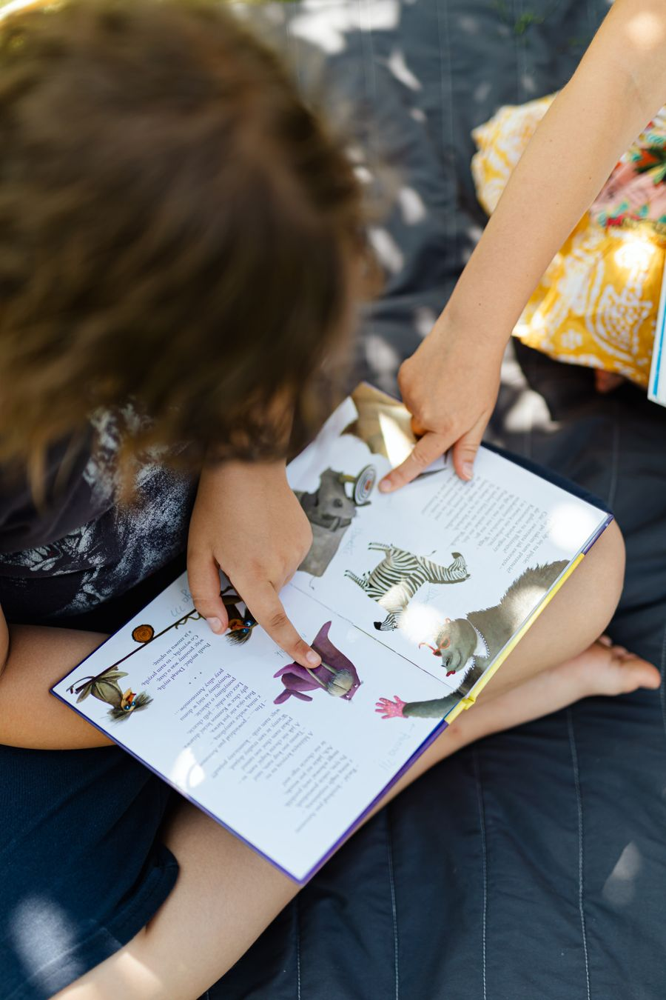
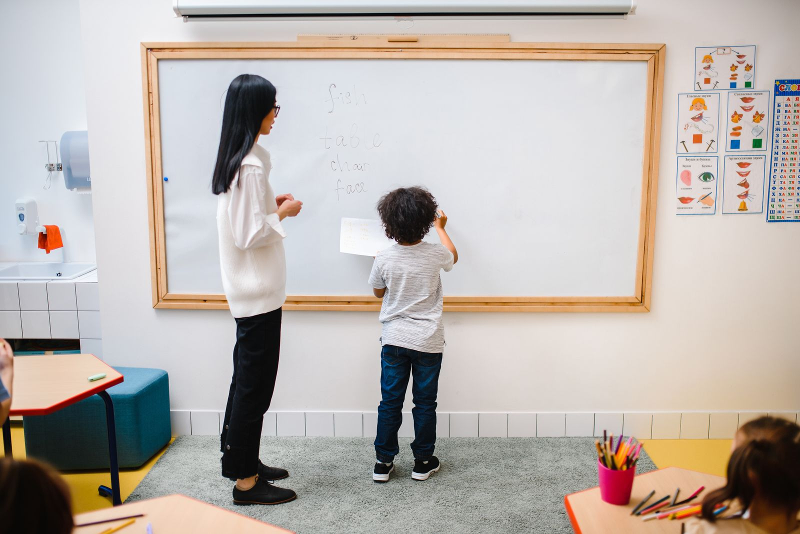

P초1–2
Phonics
알파벳 소리 26개와 짧은 모음부터. 그림책을 손가락으로 짚으며 읽습니다.

소리 내어 읽고, 틀려도 끝까지 말하는 영어교습소한 반 여섯 명 · 다섯 레벨 · 매 수업 3분씩 칠판 앞에 섭니다
레벨테스트 20분 알아보기
Board time학년이 아니라 읽기 속도로 반을 나눕니다. 넉 달마다 다시 듣고, 준비된 아이만 올라갑니다.
초1–2 · 소리와 글자 잇기
초3–4 · 챕터북 소리 내어 읽기
초5–6 · 한 단락 일기 쓰기
초6–중1 · 1분 발표 · 짝 토론
중1–2 · 듣기 평가 · 문법 정리
반마다 담당 선생님이 한 분입니다. 레벨이 바뀌어도 같은 요일, 같은 시간을 지킵니다.
알파벳 소리 26개와 짧은 모음부터. 그림책을 손가락으로 짚으며 읽습니다.

한 주에 챕터북 한 권. 수업 시작 10분은 한 페이지씩 돌아가며 소리 내어 읽기.

주 2회 영어 일기 다섯 문장. 빨간 펜 대신 다시 쓸 문장 하나만 표시해 돌려줍니다.
매주 1분 발표와 짝 토론. 발표는 녹음해 두었다가 학기 끝에 처음 것과 들어 봅니다.

학교 듣기 평가 형식으로 주 1회 20문항. 틀린 문항은 받아쓰기로 다시 듣습니다.

한 반은 주 3회(월·수·금) 또는 주 2회(화·목). 한 수업 80분입니다.
자리가 남은 반은 Open 표시. 전화로 바로 확인해 드립니다.
| Time | Mon · Wed · Fri월 · 수 · 금 | Tue · Thu화 · 목 | Sat토 |
|---|---|---|---|
| 14:30 | P1P2 | R1 | 보충 |
| 16:10 | R2Open | W1 | S 발표 |
| 17:50 | W2 | S1Open | — |
| 19:40 | L1 | L2 | — |
레벨테스트는 무료, 20분입니다. 아이가 읽는 동안 옆에서 함께 들으셔도 됩니다.